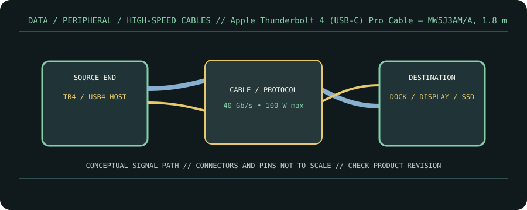

[ CABLE PRODUCT RECORD // APPLE THUNDERBOLT 4 (USB-C) PRO CABLE, 1.8 M, MW5J3AM/A ]
Apple Thunderbolt 4 (USB-C) Pro Cable — MW5J3AM/A, 1.8 m
USB-C male ↔ USB-C male; braided Thunderbolt 4 Pro cable. This entry documents the named product model, not a universal guarantee for all cables with the same connector.

CLASSIFICATION: Data, peripheral, and high-speed cables. Model-specific facts below are sourced; negotiated operation remains limited by the connected devices.
Interface and capability
| Product / protocol | Apple Thunderbolt 4 (USB-C) Pro Cable, 1.8 m, MW5J3AM/A. Thunderbolt 4 / Thunderbolt 3 / USB4, USB 3.2, DisplayPort HBR3, USB Power Delivery. |
|---|---|
| Connector type | USB-C male at both ends; Apple’s Pro cable has the Thunderbolt symbol on the connector sleeve. The product listing identifies the 1.8 m length. |
| Electrical / length limits | 1.8 m; up to 40 Gb/s on Thunderbolt 3/4 or USB4, up to 10 Gb/s USB 3.2, DisplayPort HBR3, and up to 100 W charging per Apple product information. |
| Revision-specific compatibility | Usable with Thunderbolt 3/4 or USB4 endpoints, but negotiated data rate and display modes are capped by the slower endpoint and host implementation. Up to six-device daisy chaining refers to a compatible Thunderbolt 3 chain, not arbitrary USB-C peripherals. |
Compatibility & handling
- Verify that the endpoint ports implement Thunderbolt or USB4 when a high-rate link is required; this is not a claim that every USB-C port supports those protocols.
- Apple lists up to 100 W charging; use a compatible USB-PD source and sink and do not interpret the cable rating as a guaranteed charge rate.
- Keep the exact 1.8 m braided model distinguishable from shorter/lower-capability charge cables by its Thunderbolt marking and part identification.
Sources & further reading
- Apple — Thunderbolt 4 (USB-C) Pro Cable (1.8 m)Apple product listing for the MW5J3AM/A 1.8 m cable and published capabilities.
- USB-IF — USB4 Specification v2.0USB4 protocol specification and implementation context.
- USB-IF — USB Type-C Cable and Connector SpecificationUSB-C cabling, current and configuration reference.